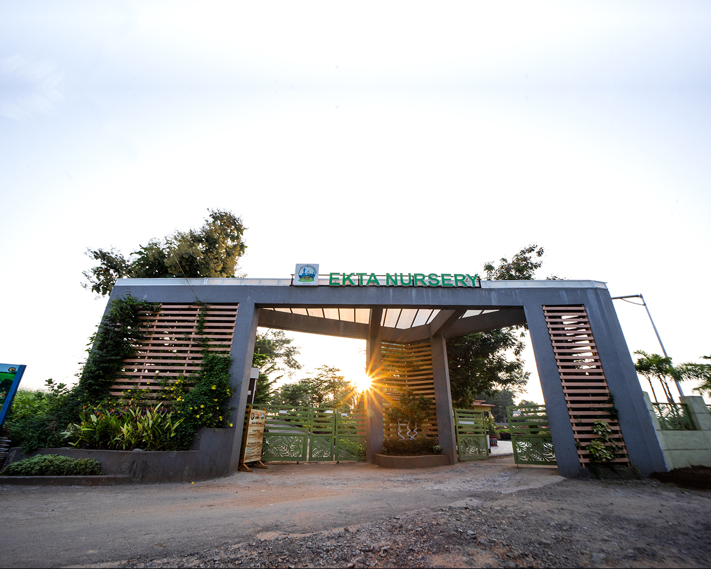

Ekta Nursery was envisioned by Hon'ble Prime Minister Shri Narendra Modi while dedicating the Statue of Unity
to the Nation. He suggested developing Ekta Nursery as a tourist destination to spread awareness about eco-friendly
practices. It focuses upon various traditional eco-friendly products like Bamboo Craft, Areca Leaf Plates,
Organic Pots, Bonsai, Ceramic Pots, Tribal Life, Kadaknath, Apiculture, Tribal Tea, etc. with a live demonstration of
their manufacturing process. A Bonsai-making training and display area has been created to expose the visitors to the
fascinating art of creating miniatures of the forest giants.
Ekta Nursery yields one million plants, signifying the underlying theme of Unity pervading across Kevadia.
The nursery produces and sells plants as well. The central part of the nursery is dedicated to displaying the ethnic
tribal culture of the region through a tribal hut containing various artifacts used by the locals.
There is also a cafeteria to cater that serves fabulous tribal delicacies, especially the Herbal Tribal Tea.
Most of the activities here are conducted by women self-help groups belonging to villages around Kevadia.
This initiative contributes to the employment of local people and is a contributor to the cause of social upliftment. Moreover, the site is exceptionally picturesque, situated in the valley formed by the majestic Vindyachal and Satpura mountain ranges, along the banks of the Narmada river. The breathtaking view of the world's tallest statue can be seen from the vantage point at the nursery.
